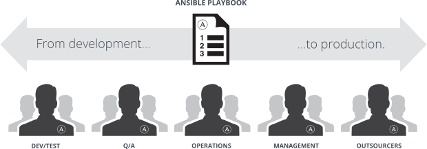
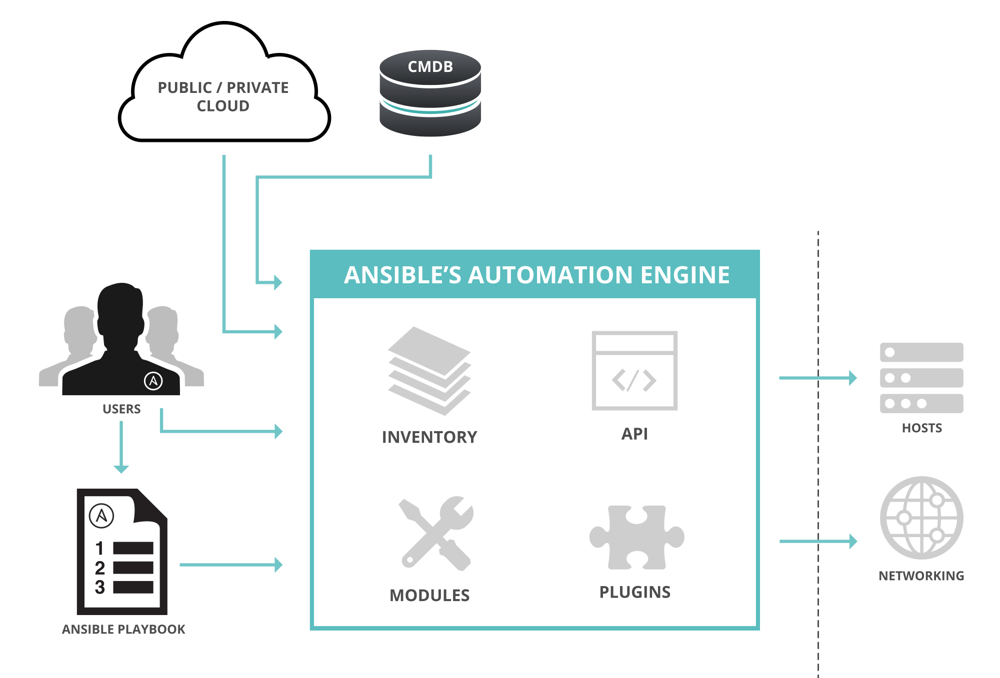
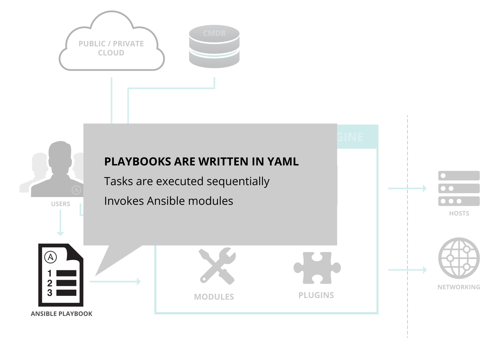
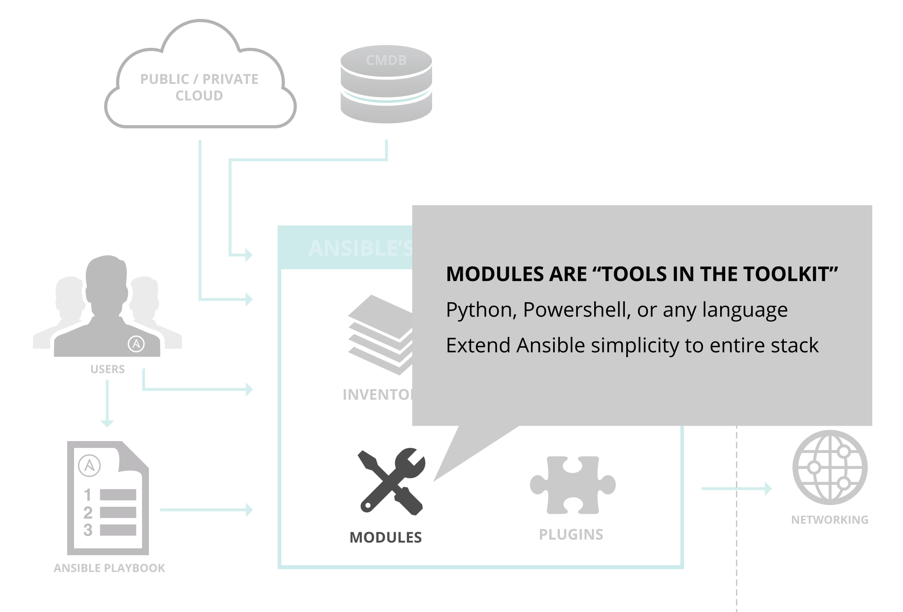
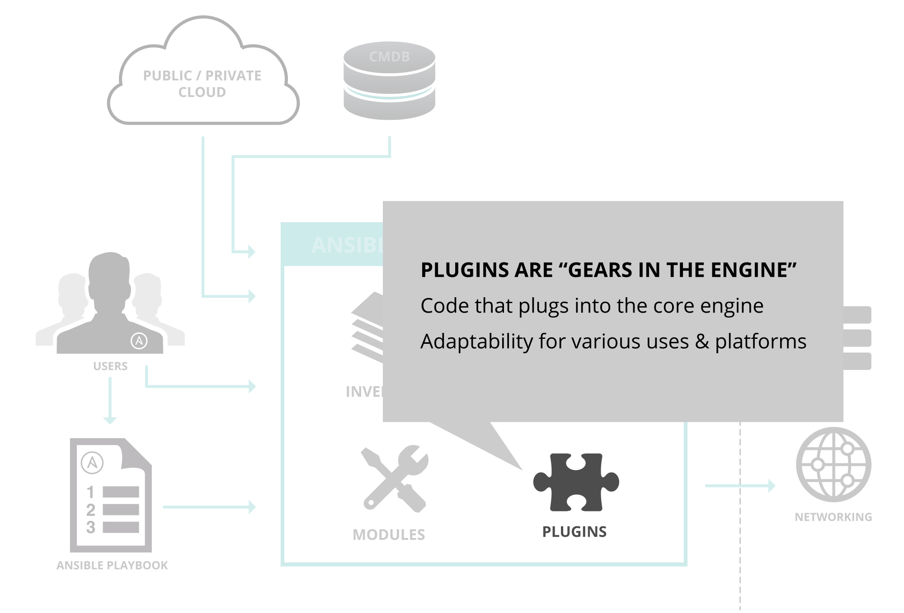
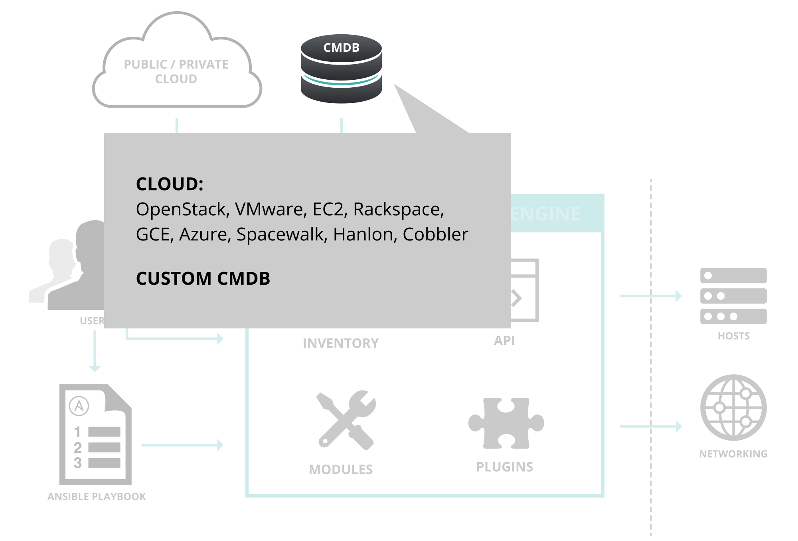
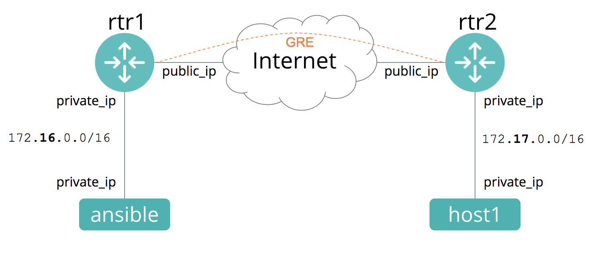

Ansible Networking Workshop
What You Will Learn
Ansible is capable of handling many powerful automation tasks with the flexibility to adapt to many environments and workflows. With Ansible, users can very quickly get up and running to do real work.
What is Ansible and The Ansible Way
Installing Ansible
How Ansible Works and its Key Components
Ad-Hoc Commands
Playbook Basics
Reuse and Redistribution of Ansible Content with Roles
This deck is designed to provide students with direct introductory instruction and guidance to beginning to automate with Ansible. It is the starting point for students intent on becoming more proficient with Ansible through other Linklight modules and their own usage.
This deck supports lecture and hands-on forms of presenting this material.
Allow 2 hours to deliver the lecture-based form and 4 hours for stopping to do the workshop assignments. To access the additional slides for delivering the workshops, navigate down when available.
See the Ansible Linklight facilitator’s guide for more details on using this deck and it’s associated material.
What is Ansible?
It's a simple automation language that can perfectly describe an IT application infrastructure in Ansible Playbooks.
It's an automation engine that runs Ansible Playbooks.
Ansible Tower is an enterprise framework for controlling, securing and managing your Ansible automation with a UI and RESTful API .
Ansible has a number of qualities that make it the most rapidly growing automation platform in the world.
Ansible is simple. Playbooks are human and machine readable, no special coding skills required – and even people in your IT organization that don’t know Ansible can read an Ansible playbook and understand what’s happening.
This simplicity also means that it’s easy to install and get started to do real work with it quickly – usually in just minutes.
Ansible also works like you think – tasks are always executed in order. All together, the simplicity ensures that you can get started quickly.
Ansible is powerful. Simplicity is great, but to be really useful, you also need the powerful features that ensure you can model even the most complex of IT workflows.
Ansible is complete automation, able to deploy apps, manage orchestration, and configure the infrastructure, networks, operating systems, and services that you’re already using today.
Together, Ansible’s capabilities allow you to orchestrate the entire application and environment lifecycle, regardless of where It's deployed.
Ansible is Agentless. Ansible relies on industry-standard and trusted SSH and WinRM protocols to automate. There are no agents or other software to install, and no additional firewall ports to open. With no need to separately stand up a management infrastructure, Ansible further reduces the activation energy required from your team to start automating today.
In a world where IT complexity stymies even the most basic of IT tasks, Ansible provides a much needed respite – and path forward enabling teams to crush productivity-stealing complexity and overhead.
The Ansible Way
CROSS PLATFORM – Linux, Windows, UNIX, Cisco, Juniper, Arista, Cumulus
Agentless support for all major OS variants, physical, virtual, cloud and network
HUMAN READABLE – YAML
Perfectly describe and document every aspect of your application environment
DYNAMIC INVENTORIES
Capture all the network hosts 100% of the time, regardless of infrastructure, location, etc.
Ansible: The Language of DevOps

COMMUNICATION IS THE KEY TO DEVOPS.
Ansible is the first automation language
Batteries Included
Ansible comes bundled with hundreds of modules for a wide variety of automation tasks
cloud
containers
database
files
messaging
monitoring
networking
notifications
packaging
system
testing
utilities
Ansible Modules control the things that you’re automating. They can do everything from acting on system files, installing packages, or making API calls to a service framework.
Ansible is open source. Created with contributions from an active open source community and built for the people who use it every day. At its heart, Ansible was made to help more people experience the power of automation so they could work better and faster together.
What can you do with Ansible? Nearly anything. Ansible is the Swiss Army knife of DevOps, capable of handling many powerful automation tasks with the flexibility to adapt to many environments and workflows.
Many folks like to categorize Ansible as a configuration manager, and although yes, Ansible can do that, it"s just the tip of the iceberg. When you couple configuration management with orchestration, you can start to model complicated multi-tier deployments with ease.
With Ansible, once someone on your team automates something, everyone on the team now knows how to do it.
Installing Ansible
# the most common and preferred way of
# installation
$ sudo pip install ansible
# you will need the EPEL repo configured on
# CentOS, RHEL, or Scientific Linux
$ sudo yum install ansible
# you will need the PPA repo configured on
# Debian or Ubuntu
$ sudo apt-get install ansible
As open source, Ansible is freely-available thru numerous means and can be installed in minutes with only a few requirements that most system already have. The installation methods listed here are the most commonly used.
Currently Ansible can be run from any machine with Python 2.6 or 2.7 installed. Python 3 support is in tech preview as of version 2.2. Windows isn’t supported for the control machine.
The requirements of nodes being managed by Ansible vary based on the type and access used to work with them. Ansible needs a way to communicate, which is normally ssh or winrm though other means such as RESTful APIs and specialized connection types may be necessary. Linux servers will need Python 2.6 or later. Windows serves need PowerShell 3.
For more details see the Installation page in the Ansible documentation.
Demo Time:
To demonstrate how easy it is to install Ansible, open an SSH session to your control host and install ansible using one of the methods in the previous slide. Once complete do a $ ansible --version.
How Ansible Works

The diagram on this slide shows the relationship between all the key components of Ansible starting with the user who writes an Ansible playbook.
Plays & Playbooks

Playbooks are written in YAML and are used to invoke Ansible modules to perform tasks that are executed sequentially i.e top to bottom. They can describe a policy you want your remote systems to enforce, or a set of steps in a general IT workflow. Playbooks are like an instruction manual and describe the state of environment.
For more details see the Playbook page in the Ansible documentation.
Modules & Tasks

If playbooks are the instruction manual for setting up and managing your infrastructure, Ansible modules are the tools in your toolkit.
Modules are executable bits of code that operate on hosts; however, we don’t need to understand the underlying implementation to get them to work. Modules do the heavy-lifting in Ansible and abstract users from the complexity of the underlying details.
For more details see the Introduction to Modules and Module Index page in the Ansible documentation.
Plugins

Continuing our metaphor, plugins are the gears in the engine.
Plugins are pieces of code that extend Ansible’s core functionality. Ansible ships with a number of handy plugins, and you can easily write your own.
These are some of the more common plugin types:
Action plugins manage the execution on the controller and deployment of modules to hosts.
Callback plugins enable you to hook into Ansible events for display or logging purposes.
Connection plugins define how to communicate with inventory hosts.
Filters plugins allow you to manipulate data inside Ansible plays and/or templates. This is a Jinja2 feature; Ansible ships extra filter plugins.
For more details see the Developing Plugins page in the Ansible documentation.
Inventory
Your inventory of hosts are your raw material. They are a list of nodes and associated meta data that Ansible can automate.
Inventory lists can be built and stored several different ways, including static files, or can be dynamically-generated from an an external source.
You can also specify variables as part of an inventory list. For instance, set a particular host key that’s needed to log into that system remotely. Inventories are ultimately lists of things you want to automate across.
Here in this slide was see an example of a simple static inventory list of three hosts (webserver1, webserver2 and dbserver1) in two groups (web and db).
For more details see the Inventory page in the Ansible documentation.
Inventory

In large-scale environment subject to constant change, synchronizing and maintaining inventory statically is tedious and error prone endeavor. That is why Ansible includes support of external sources such as public and private cloud providers and configuration management database (CMDB) systems.
For more details see the Dynamic Inventory page in the Ansible documentation.
Modules
Modules do the actual work in ansible, they are what gets executed in each playbook task. But you can also run a module ad-hoc using the ansible command.
*os_facts
*os_command
*os_config
more modules depending on platform
Arista EOS = eos_
Cisco IOS/IOS-XE = ios_
Cisco NX-OS = nxos_
Cisco IOS-XR = iosxr_
Juniper Junos = junos_
VyOS = vyos_
If playbooks are the instruction manual for setting up and managing your infrastructure, Ansible modules are the tools in your toolkit.
We’ve already discussed, Ansible modules. They are the “batteries” and the “tools in a users toolkit.”
While there are hundreds of modules at your disposal out-of-the-box these are the most common ones.
Playbook tasks and how they relate to modules will be covered ahead. Tasks are the application of a module to perform a specific unit of work.
Modules per network platform
tasks:
- name: configure eos system properties
eos_system:
domain_name: ansible.com
vrf: management
when: ansible_network_os == 'eos'
- name: configure nxos system properties
nxos_system:
domain_name: ansible.com
vrf: management
when: ansible_network_os == 'nxos'
Modules Documentation
# List out all modules installed
$ ansible-doc -l
...
ios_banner Manage multiline banners on Cisco IOS devices
ios_command Run commands on remote devices running Cisco IOS
ios_config Manage Cisco IOS configuration sections
...
# Read documentation for installed module
$ ansible-doc ios_command
> IOS_COMMAND
Sends arbitrary commands to an ios node and returns the results read from the
device. This module includes an argument that will cause the module to wait for a
specific condition before returning or timing out if the condition is not met. This
module does not support running commands in configuration mode. Please use
[ios_config] to configure IOS devices.
Options (= is mandatory):
...
Module documentation is also available from the commandline using the ansible-doc.
One noteworthy advantage, of ansible-doc is that it can display any custom module with it's own embedded documentation that you may have added to your Ansible environment.
Modules: Run Commands
If Ansible doesn’t have a module that suits your needs there are the “run command” modules:
command : Takes the command and executes it on the host. The most secure and predictable.ios_command : Sends arbitrary commands to an ios node and returns the results read from the device.
NOTE: Unlike standard modules, run commands have no concept of desired state and should only be used as a last resort.
"Run commands" are what we collectively call these modules that enable users to do commandline operations in different ways. They’re a great catch all mechanism for getting things done, but they should be used sparingly and as a last resort. The reasons are many and varied.
The overuse of run commands is common amongst those just becoming familiar with Ansible for automating their work. They use shell to fire off a bash command they already know without stopping to look at the Ansible docs. That works well enough initially, but it undermines the value of automating with Ansible and sets things up for problems down the road. As a best practice, always check the hundreds of Ansible shipping modules for what you need and use those first and run commands as a last resort.
NOTE: shell allows for IO redirection such as pipes. This is why It's best practice to use command unless they need to pipe something. It also best practice to never pass user input or variables thru a run command.
Inventory
Inventory is a collection of hosts (nodes) with associated data and groupings that Ansible can connect and manage.
Hosts (nodes)
Groups
Inventory-specific data (variables)
Static or dynamic sources
We've already discussed inventory in our review of Ansible's key components.
Inventory consists of hosts, groups, inventory specific data. Inventory can either be static or dynamic.
Inventory is a collection of the hosts (nodes) with associated metadata and groupings that Ansible can connect and manage. An inventory source can be static files or dynamically retreived from an external system.
You can specify a different inventory file using the -i <path> option on the commandline or your Ansible configuration file.
Static Inventory Example
This inventory will work but is not human readable.
10.42.0.2
10.42.0.6
10.42.0.7
10.42.0.8
10.42.0.100
host.example.com
Static inventory is the easiest source to get started with. This example shows a static inventory source in It’s simplist form – a single file with a list of IP addresses or hostnames.
NOTE: Ansible infers a localhost is present even if it is not explictly listed. This is why you can actually run Ansible without a inventory source. Ansible will only be able to operate on the localhost where it is being run.
Static Inventory Example
[all:vars]
ansible_user=lcage
ansible_ssh_pass=ansible
ansible_port=22
[routers]
rtr1 ansible_host=54.174.116.49 ansible_user=ec2-user ansible_network_os=ios
rtr2 ansible_host=54.86.17.101 ansible_user=ec2-user ansible_network_os=ios
[hosts]
host1 ansible_host=34.224.57.27 ansible_user=ec2-user
[control]
ansible ansible_host=34.228.79.198 ansible_user=ec2-user
The example shown here is a more practical and common example of a static inventory file.
Static inventory files are expressed in INI format. The headings in brackets are group names, which are used in classifying systems and deciding what systems you are controlling at what times and for what purpose. Hosts can belong to multiple groups and groups can be members of other groups. (The latter is not shown here.)
NOTE: This example contains variables, a topic we haven't touched on just yet. We'll go into them on the next slide.
Other noteworthy attributes in our example:
ansible_host is an example of a host variable.Hosts can be assigned arbitrary human-meaningful names or aliases such as "control" and "haproxy". Ansible will instead use the value of ansible_host (one of several "magic" inventory variables ) as the network address to connect.
Static inventory files can support character ranges such as "node-[1:3]"
Like localhost, Ansible infers an "all" group is present. As its name implies, all inventory hosts are memebers of this group.
The heading "all:vars" is an example of group variable assignment using two more "magic" variables, ansible_ssh_private_key_file and ansible_user.
This example just covers the basics. There's a lot more to inventory that is not covered here. See the Ansible inventory documentation for more details.
Ad-Hoc Commands
An ad-hoc command is a single Ansible task to perform quickly, but don’t want to save for later.
Ansible ad-hoc commands is a good place to start to understand the basics of what Ansible can do before learning how to use playbooks – ad-hoc commands can also be used to do quick things that you might not necessarily want to write a full playbook for.
Generally speaking, the true power of Ansible lies in playbooks. So why would you use ad-hoc tasks versus playbooks?
For instance, if you wanted to restart a service on all of your lab nodes, you could execute a quick one-liner in Ansible without writing a playbook.
Ad-Hoc Commands: Common Options
-m MODULE_NAME, --module-name=MODULE_NAME -a MODULE_ARGS, --args=MODULE_ARGS -b, --become -e EXTRA_VARS, --extra-vars=EXTRA_VARS --version --help
This slide shows essential commandline options for running ad-hoc commands that will be useful in our upcoming workshop assignment.
Ad-Hoc Commands
# check all my inventory hosts are ready to be
# managed by Ansible
$ ansible all -m ping
# collect and display the discovered facts
# for the localhost
$ ansible localhost -m setup
# run the uptime command on all hosts in the
# web group
$ ansible web -m command -a "uptime"
Ad-hoc commands are quick checks on your servers that you don’t want to preserve in an Ansible playbook.
An ad-hoc command can be used to do some tasks that you might not necessarily want to write a full playbook and save for later.
This is a good place to start to understand the basics of what Ansible can do prior to learning about playbooks where the true power of Ansible automation lies.
For more information see Introduction To Ad-Hoc Commands .
Sidebar: Discovered Facts
Facts are bits of information derived from examining a host systems that are stored as variables for later use in a play.
$ ansible localhost -m setup
localhost | success >> {
"ansible_facts": {
"ansible_default_ipv4": {
"address": "192.168.1.37",
"alias": "wlan0",
"gateway": "192.168.1.1",
"interface": "wlan0",
"macaddress": "c4:85:08:3b:a9:16",
"mtu": 1500,
"netmask": "255.255.255.0",
"network": "192.168.1.0",
"type": "ether"
},
The second ad-hoc command example from the prior slide provides the following JSON output of a localhost facts run.
Facts are bits of information derived from examining a host systems that are stored as variables for later use. An example of this might be the ip address of the host, or what operating system it is running. The facts Ansible will discover about a host is extensive. What's shown here is just a small sample. Run ansible localhost -m setup for a more complete representation.
Ansible collects facts using the setup module. By default, Ansible will run the setup module before any other tasks are executed in a playbook. These facts can be referenced by subsequent automation tasks on a per host-basis during the playbook run.
Sidebar: Network Facts
For non-Linux systems there are vendor specific modules for fact collection.
$ ansible -m ios_facts routers -c network_cli
student1-rtr1 | SUCCESS => {
"ansible_facts": {
"ansible_net_all_ipv4_addresses": [
"172.17.1.238"
],
"ansible_net_all_ipv6_addresses": [],
"ansible_net_filesystems": [
"bootflash:"
],
"ansible_net_gather_subset": [
"hardware",
"default",
"interfaces"
],
"ansible_net_hostname": "ip-172-17-1-238",
"ansible_net_image": "bootflash:csr1000v-universalk9.16.05.01b.SPA.bin",
ios_facts, junos_facts, eos_facts, etc all return JSON just like Linux facts
Demo Time:
Exercise 1.1 - Running Ad-hoc commands
To demonstrate ad-hoc commands in action, open an SSH session to your control host and run the ad-hoc commands in the previous slides.
$ ansible all -m ping
$ ansible localhost -m setup
$ ansible web -m command -a "uptime"
Workshop:
Exercise 1.1 - Running Ad-hoc commands
This brief exercise demonstrates Ansible in-action at it's most basic and simple level. Thru ad-hoc commands, students are exposed to Ansible modules and usage and will apply to their understanding of tasks and playbooks. This exercise also begins to expose students to the concepts of Ansible facts and inventory.
This workshop is also a good way to verify their lab environments are properly configured before going forward.
See workshops/adhoc_commands in the Ansible linklight repo.
Variables
Ansible can work with metadata from various sources and manage their context in the form of variables.
Command line parameters
Plays and tasks
Files
Inventory
Discovered facts
Roles
While automation exists to make it easier to make things repeatable, all of your systems are not exactly alike.
Variables are used to store metadata for each host drawing from numerous sources. For example variable may be for things like facts or file paths or package versions.
Variable Precedence
The order in which the same variable from different sources will override each other.
extra vars
task vars (only for the task)
block vars (only for tasks in block)
role and include vars
play vars_files
play vars_prompt
play vars
set_facts
registered vars
host facts
playbook host_vars
playbook group_vars
inventory host_vars inventory group_vars inventory vars
role defaults
If variables of the same name are defined in multiple sources, they get overwritten in a certain and specific order. This is why this variable precedence is important to understand.
There are 16 levels of variable precedence as of Ansible 2.x. The extra_vars (passed thru the commandline) always take precedence vs. role defaults which will always get overridden by any other source. The previous inventory example defines vars at 13 and 14 (higlighted in the list) in the variable precedence chain.
It's a good idea to limit the different sources where a specific variable is being set. While Ansible's variable precedence handling is comprehensive and well-defined, it can laborious to keep the resolution of multiple sources straight.
NOTE: The inventory variables sources showed in the static inventory example a couple of slides back are in bold type.
Tasks
Tasks are the application of a module to perform a specific unit of work.
file : A directory should existyum : A package should be installed
There are also tasks for network devices as well
ios_facts : collect the version of code running on Cisco IOS/IOS-XEios_system : configure DNS server(s) on Cisco IOS/IOS-XEnxos_snmp_user : add an SNMP user on Cisco NX-OSeos_command : turn off a port on Arista EOSjunos_banner : manage the banner on Juniper Junos OS
We've already reviewed modules, the batteries and tools Ansible provides. Tasks are the specific application of a module to perform a unit of automation.
Here we see a list of examples of common modules being applied to do something.
Example Tasks in a Play
tasks:
- name: gather ios_facts
ios_facts:
register: version
- debug:
msg: "{{version}}"
- name: Backup configuration
ios_config:
backup: yes
Plays & Playbooks
Plays are ordered sets of tasks to execute against host selections from your inventory. A playbook is a file containing one or more plays.
Playbooks are text files that contain one or more plays that are expressed in YAML. A play defines target hosts and a task list that are executed sequentially (i.e top to bottom) to achieve a certain state on those hosts.
For more details see the Playbook page in the Ansible documentation.
Playbook Example
---
- name: backup router configurations
hosts: routers
connection: network_cli
gather_facts: no
tasks:
- name: gather ios_facts
ios_facts:
register: version
- debug:
msg: "{{version}}"
- name: Backup configuration
ios_config:
backup: yes
Here we can see an example of a simple but complete Ansible play. The slides that follow will explore each of these parts and what they do.
Human-Meaningful Naming
---
- name: backup router configurations
hosts: routers
connection: network_cli
gather_facts: no
tasks:
- name: gather ios_facts
ios_facts:
register: version
- debug:
msg: "{{version}}"
- name: Backup configuration
ios_config:
backup: yes
Every play and each task in it can be assigned a name that describes its objective in the automation workflow and is output during execution.
It's best practice to always name your plays and tasks. Adding name with a human-meaningful description better communicates the intent to users when running a play.
Host Selector
---
- name: backup router configurations
hosts: routers
connection: network_cli
gather_facts: no
tasks:
- name: gather ios_facts
ios_facts:
register: version
- debug:
msg: "{{version}}"
- name: Backup configuration
ios_config:
backup: yes
The Ansible play host selector defines which nodes in the inventory the automation is targetting.
In this example, a single group of "web" is being targetted. Ansible supports targetting intersections, unions and filters of multiple groups or hosts though.
For more details see the host selector Patterns page in the Ansible documentation.
Tasks
---
- name: backup router configurations
hosts: routers
connection: network_cli
gather_facts: no
tasks:
- name: gather ios_facts
ios_facts:
register: version
- debug:
msg: "{{version}}"
- name: Backup configuration
ios_config:
backup: yes
Demo Time:
To demonstrate how an Ansible, open an SSH session to your control host and run the playbook in workshops/networking/1.2-backup/backup.yml. That example playbook is essentially the same one we just examined.
Don't forget to reverse what this playbook does before continuing to not interfere with later demos and workshops.
Workshop:
This assignment provides a quick introduction to playbook structure to give them a feel for how Ansible works, but in practice is too simplistic to be useful.
See workshops/simple_playbook in the Ansible Linklight repo.
Note: If your time is limited, this is a workshop you can skip. We'll cover this and more topics in the next workshop.
Variables - Recap
host vars - variable specific to one host
group vars - variables for all hosts within the group
It is possible, but not required, to configure variables in the inventory file.
Inventory ini file
[junos]
vsrx01 ansible_host=an-vsrx-01.rhdemo.io private_ip=172.16.1.1
vsrx02 ansible_host=an-vsrx-02.rhdemo.io private_ip=172.17.1.1
[junos:vars]
ansible_network_os=junos
ansible_password=Ansible
[ios]
ios01 ansible_host=an-ios-01.rhdemo.io
[ios:vars]
ansible_network_os=ios
ansible_become=yes
ansible_become_method=enable
ansible_become_pass=cisco
Host Variables - hostvars
[junos]
vsrx01 ansible_host=an-vsrx-01.rhdemo.io private_ip=172.16.1.1
vsrx02 ansible_host=an-vsrx-02.rhdemo.io private_ip=172.17.1.1
[junos:vars]
ansible_network_os=junos
ansible_password=Ansible
[ios]
ios01 ansible_host=an-ios-01.rhdemo.io
[ios:vars]
ansible_network_os=ios
ansible_become=yes
ansible_become_method=enable
ansible_become_pass=cisco
Group Variables - groupvars
[junos]
vsrx01 ansible_host=an-vsrx-01.rhdemo.io private_ip=172.16.1.1
vsrx02 ansible_host=an-vsrx-02.rhdemo.io private_ip=172.17.1.1
[junos:vars]
ansible_network_os=junos
ansible_password=Ansible
[ios]
ios01 ansible_host=an-ios-01.rhdemo.io
[ios:vars]
ansible_network_os=ios
ansible_become=yes
ansible_become_method=enable
ansible_become_pass=cisco
Conditionals
Ansible supports the conditional execution of a task based on the run-time evaluation of variable, fact, or previous task result.
- name: configure interface settings
ios_config:
lines:
- description shutdown by Ansible
- shutdown
parents: interface GigabitEthernet2
when: ansible_network_os == "ios"
Conditionals are another instance of Jinja2 in action within Ansible plays themselves. In the provided example "ansible_os_family" is a fact variable Ansible will set.
There are other forms of conditional clauses, but when is usually all that is needed.
NOTE: Conditional clauses are consdered to be raw Jinja2 expression without double curly braces.
Multi-Platform Playbooks
- name: run on eos
include_tasks: tasks/eos.yml
when: ansible_network_os == eos
- name: run on ios
include_tasks: tasks/ios.yml
when: ansible_network_os == ios
- name: run on junos
include_tasks: tasks/junos.yml
when: ansible_network_os == junos
- name: run on nxos
include_tasks: tasks/nxos.yml
when: ansible_network_os == iosxr
Using a config module
Manage configuration on a network platform
- name: configure top level configuration
ios_config:
lines: hostname {{ inventory_hostname }}
- name: configure interface settings
ios_config:
lines:
- description test interface
- ip address 172.31.1.1 255.255.255.0
parents: interface Ethernet1
- name: configure from a jinja2 template
ios_config:
src: config.j2
Exercise 1.3 - Network Diagram
As a lab precursor look at the network diagram

Demo Time:
To demonstrate how an Ansible, open an SSH session to your control host and run the playbook in workshops/networking/1.2-backup/backup.yml. That example playbook is essentially the same one we just examined.
Don't forget to reverse what this playbook does before continuing to not interfere with later demos and workshops.
Workshop:
This assignment provides a quick introduction to playbook structure to give them a feel for how Ansible works, but in practice is too simplistic to be useful.
See workshops/simple_playbook in the Ansible Linklight repo.
Note: If your time is limited, this is a workshop you can skip. We'll cover this and more topics in the next workshop.
Doing More with Playbooks
Here are some more essential playbook features that you can apply:
Templates
Loops
Conditionals
Tags
Blocks
We only have covered the most essential capabiltites of what can be done with a playbook so far.
Here we list a few more though this is still far from all there is. There's many other powerful playbook features for handling less common though vital automation workflows. No need to learn everything at once. You can start small and pick up more features over time as you need them.
Templates
Ansible embeds the Jinja2 templating engine that can be used to dynamically:
Set and modify play variables
Conditional logic
Generate files such as configurations from variables
Templates are a vital feature provided by the Jinja2 template engine, a powerful piece of software independent of Ansible. Ansible makes this usage as seamless and transparent as possible. Most will not realize they are doing templating when they develop plays with Ansible.
We don't show any specific template examples at the moment because we'll have plenty of opportunity to see templates in action as we cover other topics.
In all actuality, what is covered here only touches upon a few of its most basic features. To go deeper see these docs:
Loops
Loops can do one task on multiple things, such as create a lot of users, install a lot of packages, or repeat a polling step until a certain result is reached.
---
- hosts: cisco
connection: local
tasks:
- nxos_snmp_user:
user: "{{item.user}}"
group: network-admin
authentication: sha
pwd: "{{item.password}}"
with_items:
- { user: 'exampleuser', password: 'testPASS123' }
- { user: 'gerald', password: 'testPASS456' }
- { user: 'sean', password: 'testPASS789' }
- { user: 'andrius', password: 'vTECH1234' }
This example demonstrates a basic loop with with_items. The loop sets a variable called "item", a template variable courtesy of the embedded Jinja2 template engine, with the list value that is in context.
There are many different and specialized types of task loops to work with. See the Loops documentation to go deeper.
Tags
Tags are useful to be able to run a subset of a playbook on-demand.
tasks:
- name: gather ios_facts
ios_facts:
register: version
tags: debug
- debug:
msg: "{{version}}"
tags: debug
- name: Backup configuration
ios_config:
backup: yes
tags:
- backup
In the provided example, if the playbook were run with --tags "packages" the yum task would execute and the template task would be skipped. If the playbook were run with --tags "configuration" the opposite would happen. Without a --tags both tasks would execute like normal.
Tags can be seen as a simple though specialized form of conditional statement designed to enable the execution of a subset tasks. Tags are a bit more than simple boolean flags though. To dig deeper see the playbook Tags documentation .
Blocks
Blocks cut down on repetitive task directives, allow for logical grouping of tasks and even in play error handling.
- name: Configure Hostname and DNS
block:
- ios_config:
lines: hostname {{ inventory_hostname }}
- name: configure name servers
ios_system:
name_servers:
- 8.8.8.8
- 8.8.4.4
when: ansible_network_os == "ios"
In the provided example we use a block to group two tasks that are to be conditional executed if a host is running a Red Hat family linux using one conditional clause. In practice, we could have copied the when clause onto each task and gotten same result. Using a block, there is less clutter thereby less to maintain and nothing to keep in sync. The utility of using a block increases the more tasks and clauses are in use.
Blocks have a play in error handling and automating roll backs that we won't get into here given the scope of that topic.
See the documentation on blocks to dig deeper.
Demo Time:
The simple playbook we examined gave us a sense of the structure of a playbook and how they work, but in reality was too simlistic to be practical. Here we look at a basic playbook that it more complete to what users will commonly do with Ansible.
Walk thru the site.yml playbook in examples/apache-basic-playbook and note the added logic and its function. Then, run the playbook on the control host.
Don't forget to reverse what this playbook does before continuing to not interfere with later demos and workshops.
Workshop:
In this workshop assignment students are tasked with developing their first complete playbook. The assignment approximates the tasks they will typical need to take in order to deploy and configure a single application service using Nginx.
See workshops/basic_playbook/ in the Ansible Linklight repo.
Tip: Don't rush this workshop. Give students ample time to do this workshop themselves to completion. This workshop covers the essential concepts and features of effectively automation with Ansible and builds up their core skills for further exploration.
Roles
Roles are a packages of closely related Ansible content that can be shared more easily than plays alone.
Improves readability and maintainability of complex plays
Eases sharing, reuse and standardization of automation processes
Enables Ansible content to exist independently of playbooks, projects -- even organizations
Provides functional conveniences such as file path resolution and default values
Roles are closely related Ansible content that are organized into a pre-defined directory structure, making them easier to reuse and share among groups.
Project with Embedded Roles Example
site.yml
roles/
common/
files/
templates/
tasks/
handlers/
vars/
defaults/
meta/
ospf/
files/
templates/
tasks/
handlers/
vars/
defaults/
meta/
This slide shows an example file system with a top-level playbook (site.yml) and two sample roles (common and apache) embedded in the project. Notice how the file structure under each role are similar to what we find in a play. Role deconstruct the content we'd put in a play and package it up in such a way that it is portable and easily shared and reused.
Project with Embedded Roles Example
# site.yml
---
- hosts: routers
roles:
- common
- ospf
This slide shows the site.yml playbook using the roles in our example project. Notice that it is much more concise than what we've seen.
Ansible Galaxy
http://galaxy.ansible.com
Ansible Galaxy is a hub for finding, reusing and sharing Ansible content.
Jump-start your automation project with content contributed and reviewed by the Ansible community.
Ansible Galaxy refers to the Galaxy website, a hub for finding, downloading, and sharing community developed roles. Downloading roles from Galaxy is a great way to jumpstart your automation projects.
Galaxy also refers to a command line tool, ansible-galaxy, for installing, creating and managing roles from the Galaxy website or directly from a git based SCM. You can also use it to create a new role, remove roles, or perform tasks on the Galaxy website.
Demo Time:
Walk thru the site.yml playbook and the contents of roles/apache in examples/apache-role. Note how the tasks, variables and handlers from the basic Ansible playbook we've been examined and have been refactored into a role.
Run the playbook on the control host. Notice anything different? Other than a few subtle display changes, you shouldn't. What's important is how roles let you better organize, share and reuse Ansible content that will be vital as the scope and sophistication of your automation accelerates.
Workshop:
Here students are tasked with refactoring their previous work from the Practical Playbook workshop into a role and modifying their playbook accordingly. We intentioinally avoid introducing any new tasks or functionality otherwise. The objective here is to focus students specifically on how roles are structured and develop.
You should emphasize the value of roles in better organizing playbooks as they grow in sophistication and making Ansible automation more portable and reusable than a basic playbook.
See workshops/roles in the Ansible Linklight repo.
Next Steps
It's easy to get started Join the Ansible community Would you like to learn a lot more?